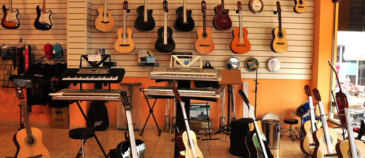
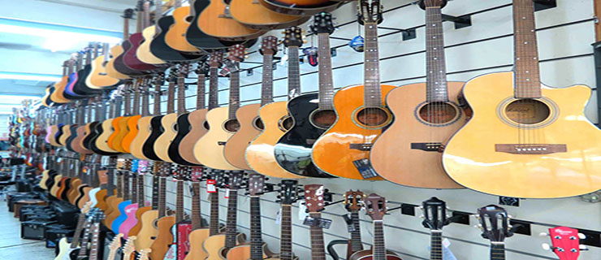
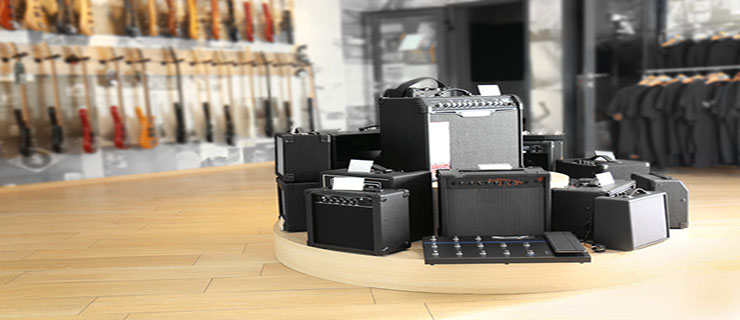
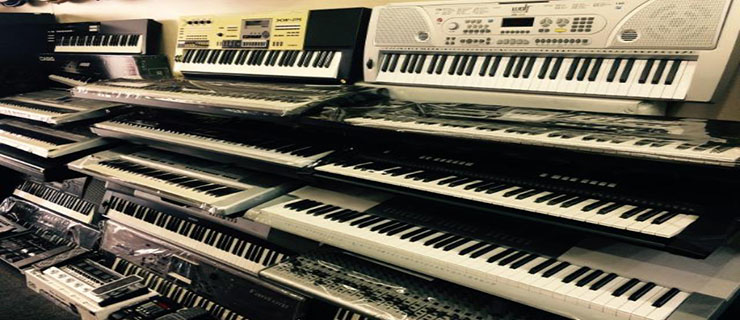

Por favor, avise-nos caso encontre algum erro no site!
I2M-Informações Sobre Instrumentos Musicais

Seja Muito Bem Vindo ao Nosso Site
I2M é um site voltado a informações sobre instrumentos musicais. Sempre Buscamos nos atualizar, trazendo novos tipos de instrumentos, modelos entre outras atualizações pertinentes ao tema central.

Informações Sobre Violões será a próxima atualização.
Atualmente o site conta apenas com informações sobre Guitarras e Pianos, estamos trabalhando em uma petição para que possa ser possível sugerir instrumentos para serem adicionados.

Nem só de guitarra vive o Rock!
Os amplificadores são uma peça chave no setup de um guitarrista, uma vez que ele é a porta de saída de todo a cadeia de sinal, sendo assim uma atualização bônus está por vir. FIQUE LIGADO!

Pianos Digitais!
Um dos enfoques atuais do site é a categoria PIANOS, dentro dela temos os pianos digitais, mais leves, compactos, transportáveis e podem emular diversos sons. Carinhosamente chamados de "TECLADO".
Este site apresenta informações sobre alguns instrumentos musicais. Ele ainda está em desenvolvimento.